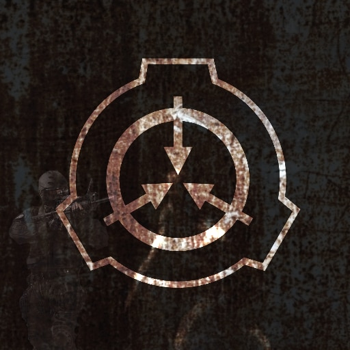
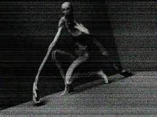

Хотя 2010 год является для Российского филиала Фонда SCP первым и, соответственно, весьма важным, осталось не так много участников, которые помнят события того времени.
Изначально сама идея создания Российского отделения возникла на отечественных имиджбордах, таких как Ычан и Тиреч, причем достаточно громкого термина "филиал" Создана она была 27 июня 2010 года рождения Российского филиала.
В течение первой недели большинство объектов были заведены в Зону-19 (такие как 173, 682, 914, 458 и многие другие).
Scp-096

Object Class: Euclid
Описание: SCP-096 - гуманоидное существо ростом примерно 2,38 метра. Субъект демонстрирует низкий уровень мышечной массы, предварительные анализы массы тела указывают на легкое недоедание. Руки непропорционально велики по сравнению с телом испытуемого, каждая примерно 1,5 м в длину. Кожа в основном лишена пигментации, нет признаков волос на теле.)
site SCP Сайт информации
Pate 2(вторая стрница)
Pate 3(третья страница)
Pate 4(четвертая стрница)
Cannel voidRUS
Cannel voidENG